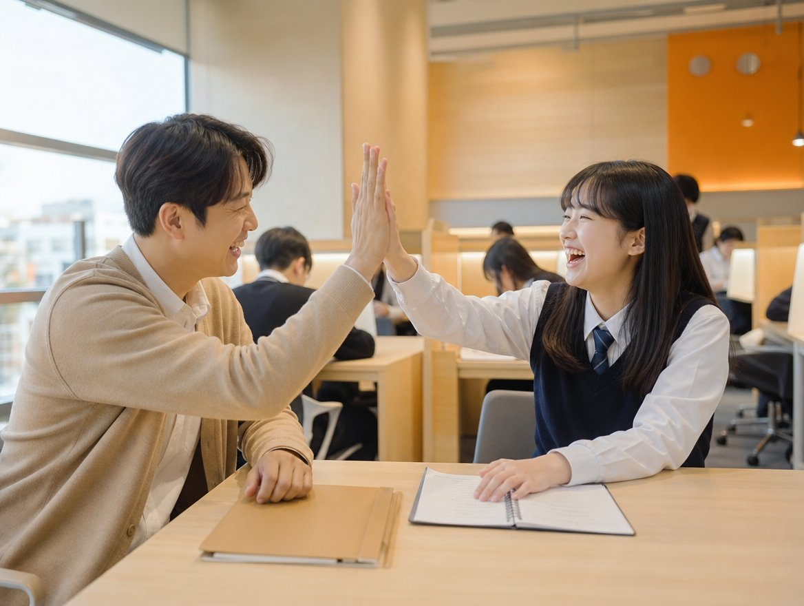

6등급 → 1등급
첫 시험 6등급에서 출발. 문법과 모의고사로 기본기를 다진 뒤 시험 2주 전부터 여러 학교 기출을 풀며 실전 감각을 키웠습니다. 성적이 오르자 목표 대학도 높아졌다고 합니다.
와와학습코칭센터 공개 사례를 요약한 내용입니다
와와학습코칭센터가 공식 채널에 공개한 수강 사례를 과목·학년별로 요약했습니다. 학생 이름은 본사 표기대로 가렸고, 효과는 학생마다 다릅니다.
첫 시험 6등급에서 출발. 문법과 모의고사로 기본기를 다진 뒤 시험 2주 전부터 여러 학교 기출을 풀며 실전 감각을 키웠습니다. 성적이 오르자 목표 대학도 높아졌다고 합니다.
중간고사 40점에서 기말고사 80점으로. 자기에게 맞는 학습법을 코치와 찾고, 스스로 학습 계획을 세운 것이 변화의 출발점이었습니다.
막연하게만 느껴지던 수학을 이해하기 쉬운 설명과 수행평가 관리로 차근차근 올렸습니다. 두 번의 시험을 거치며 점수가 계단식으로 상승했습니다.
부족한 개념과 학습 습관을 정확히 진단받고 자기주도학습 중심 개별 코칭을 3년간 이어간 사례. 성적뿐 아니라 공부 태도와 자신감이 달라졌다고 전합니다.
문학, 특히 현대시가 어려웠던 학생이 체계적 지도와 밀착 코칭으로 극복. 학습 동기와 진로 방향까지 함께 잡은 것이 성적 향상의 힘이 되었습니다.
계획을 세우고 실천하는 습관이 생기고 부족한 과목에 자신감이 붙은 사례. 1:1 소통으로 공부 태도, 자존감, 목표의식이 달라졌습니다.
수능최저 압박으로 극심한 불안을 겪던 시기에 코치의 멘탈 관리와 전략적 피드백으로 흐름을 되찾아 목표를 달성했습니다.
1등급과 2등급을 가르는 약점을 메타인지 학습으로 정확히 짚고 하나씩 지워 나가 영어 1등급을 받았습니다.
위 내용은 와와학습코칭센터 공식 홈페이지와 공식 채널에 공개된 수강 사례를 이 페이지 운영자가 요약한 것입니다. 특정 성적이나 합격을 보장하지 않으며, 결과는 학생의 출발점·학습량·센터 운영 방식에 따라 달라집니다. 원문과 영상 후기는 본사 후기 페이지에서 확인하실 수 있습니다.

사례들을 모아 보면 패턴이 보입니다. 처음부터 기출을 푼 게 아니라 기본기를 먼저 다졌고, 시험 2주 전부터 여러 학교 기출로 실전 감각을 붙였으며, 코치와 함께 자기에게 맞는 공부법을 찾아 스스로 계획을 세웠습니다.
그리고 공통적으로 '공부 태도가 달라졌다', '자신감이 생겼다', '목표가 높아졌다'고 말합니다. 점수는 그 결과로 따라왔습니다.